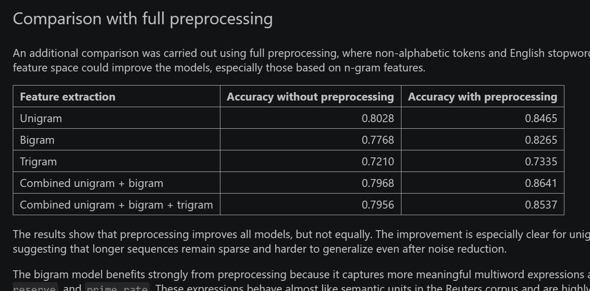

Overview
This project investigates whether sequential information improves supervised topic classification on the Reuters corpus. The analysis compares unigram features with bigrams, trigrams and combined representations.
Research Focus
The central question is whether short sequential patterns provide useful information beyond traditional bag-of-words features in a keyword-driven classification task.
Methods
- Reuters corpus preprocessing
- Unigram, bigram and trigram feature extraction
- Combined feature representation
- Supervised topic classification
- Model comparison through accuracy
Main Findings
Unigram features remain a strong baseline. The best performance comes from the combined unigram + bigram model after preprocessing, suggesting that short domain-specific expressions such as economic collocations can improve classification. Trigrams do not improve performance, probably because of sparsity.
Tools
Python · scikit-learn · NLP preprocessing · supervised classification